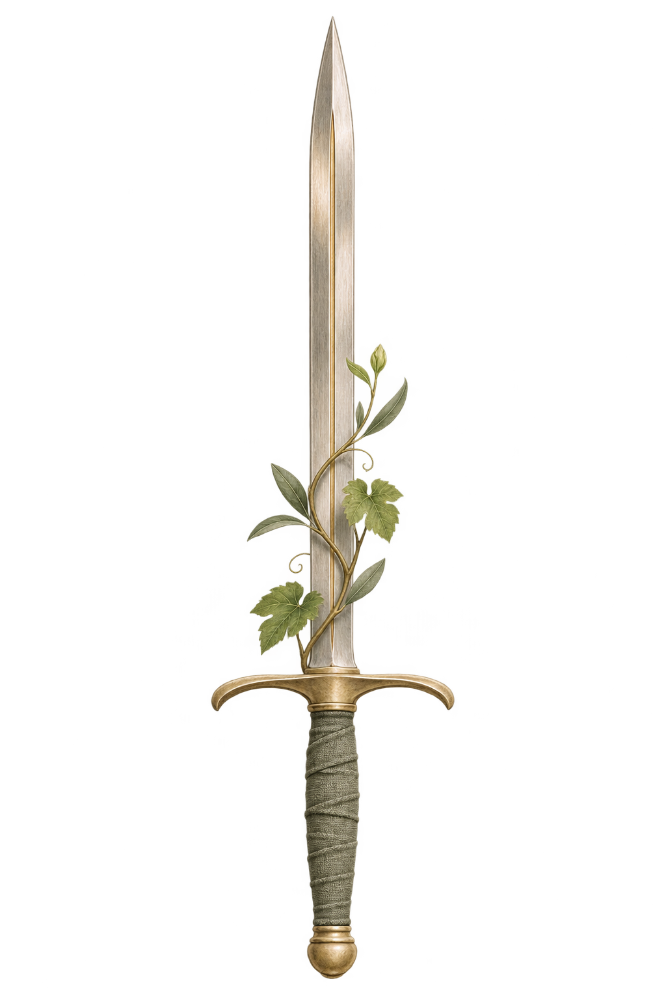
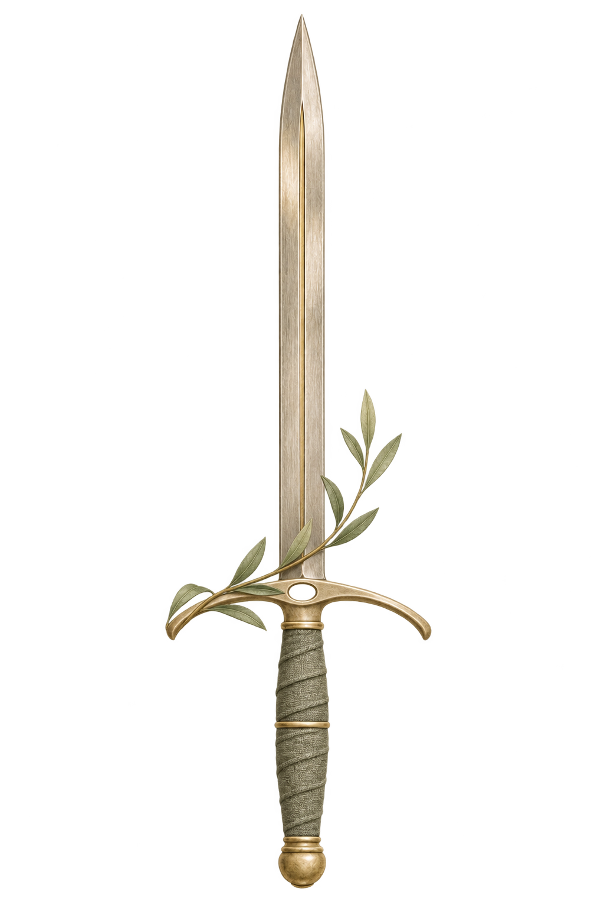

Johannes · bestehender Master · Hell

Unveränderte projektinterne Referenz · keine Geräteabnahme
Römer · neuer Master · Hell

Freie künstlerische Buchsymbolik · keine historische Rekonstruktion
Johannes · bestehender Master · Dunkel
Unveränderte projektinterne Referenz · keine Geräteabnahme
Römer · neuer Master · Dunkel
Vorbereitung 0.9 · noch nicht in OLIVA eingebunden